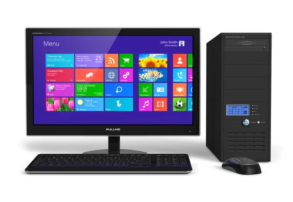
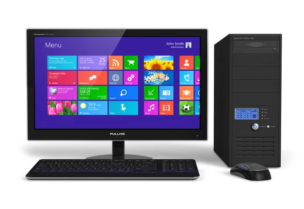
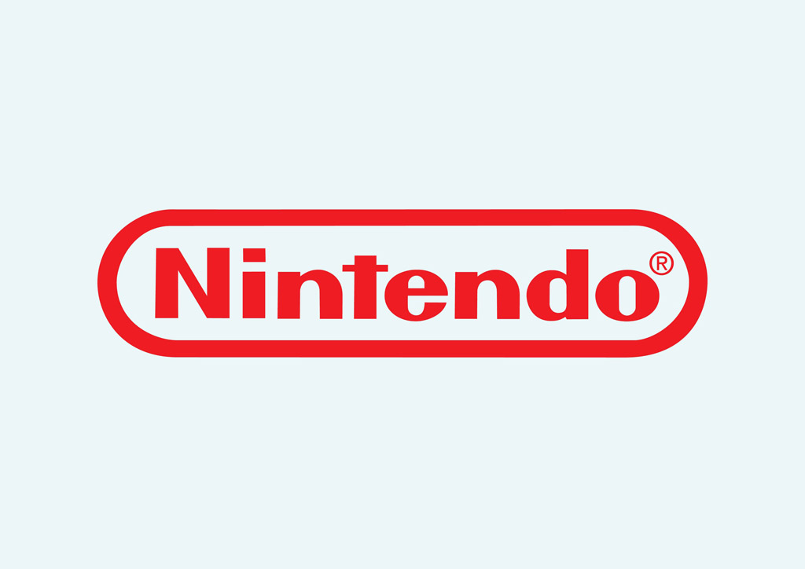

Halo Infinite

Reseña del nuevo juego de la saga Halo, donde el Jefe Maestro enfrenta nuevos desafíos en una aventura épica.
Reseña del nuevo juego de la saga Halo, donde el Jefe Maestro enfrenta nuevos desafíos en una aventura épica.

El clásico de survival horror vuelve con gráficos actualizados y una jugabilidad mejorada.

CD Projekt Red ha anunciado una nueva expansión para The Witcher 3: Wild Hunt, prometiendo nuevas aventuras y misiones.

FromSoftware ha confirmado que están trabajando en una secuela de Elden Ring, el juego que ha cautivado a millones de jugadores.
El clásico juego de survival horror de Capcom regresa con gráficos mejorados y una jugabilidad modernizada.

 


Una experiencia de terror y ciencia ficción en el espacio que te mantendrá al borde de tu asiento.

Una épica aventura en el salvaje oeste con una narrativa profunda y un mundo abierto impresionante.

Continúa la saga de Star Wars con este emocionante juego de acción y aventuras.
El clásico juego de lucha regresa con nuevos personajes y gráficos impresionantes.
Explora un mundo postapocalíptico en este juego de rol multijugador en línea.

Enfréntate a un dictador en una isla caribeña en este juego de acción en mundo abierto.

Protege Gotham City en este juego de acción y aventuras, incluso sin Batman.

Explora un mundo subterráneo en este desafiante juego de plataformas y acción.

Enfrenta a enemigos implacables en esta aventura de acción ambientada en Japón.